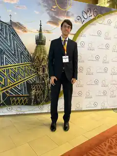

Valutazione
Ascolto degli obiettivi, storia clinica ed esame specialistico.
Professore Associato e Chirurgo Plastico con esperienza internazionale in Chirurgia Estetica e Ricostruttiva e particolare expertise nella Microchirurgia del Linfedema. Visita e opera a Modena.

Profilo
Medico Chirurgo | Specialista in Chirurgia Plastica, Ricostruttiva ed Estetica | Master in Microchirurgia Ricostruttiva | Dottore di Ricerca | Professore Associato di Chirurgia Plastica
Sono Professore Associato di Chirurgia Plastica presso l’Università di Modena e Reggio Emilia e Chirurgo Plastico presso il Policlinico di Modena, con oltre 10 anni di esperienza clinica e accademica. La mia attività comprende Chirurgia Estetica, Microchirurgia Ricostruttiva e Chirurgia del Linfedema.
Dopo un lungo percorso di formazione internazionale, un Master e un Dottorato di Ricerca in Microchirurgia Ricostruttiva, con particolare focus di ricerca sulla chirurgia del linfedema, ho lavorato nel Regno Unito presso il Royal Marsden Hospital di Londra e lo St Andrew’s Centre for Plastic Surgery and Burns del Broomfield Hospital di Chelmsford.
Dal 2023 ricopro il ruolo di Professore Associato di Chirurgia Plastica presso l’Università di Modena e Reggio Emilia. Parallelamente all’attività accademica, didattica e di ricerca, svolgo attività clinica e chirurgica presso il Policlinico di Modena, occupandomi di visite specialistiche e interventi chirurgici.
Nella Chirurgia Estetica, il mio obiettivo è ottenere risultati equilibrati, naturali e armoniosi, nel rispetto dell’anatomia e delle caratteristiche individuali di ogni persona.
Ogni percorso inizia dall’ascolto. Durante la visita dedico particolare attenzione a comprendere le esigenze e le aspettative di ogni paziente, illustrando con chiarezza le possibilità, i limiti e i risultati realistici di ogni trattamento. Credo che una scelta consapevole, basata su informazioni trasparenti e su un rapporto di fiducia tra medico e paziente, sia parte fondamentale di un buon risultato chirurgico.
La mia attività clinica è strettamente legata alla ricerca scientifica e all’insegnamento universitario. Pubblico regolarmente studi e risultati della mia attività chirurgica su riviste scientifiche internazionali peer-reviewed, contribuendo alla condivisione e alla valutazione dei risultati all’interno della comunità scientifica.
Un approccio personalizzato alla chirurgia estetica, nel rispetto dell’anatomia, delle proporzioni e delle caratteristiche individuali di ogni persona.
Chirurgia estetica del volto orientata ad armonia, proporzioni e naturalezza.
Scopri di più →Chirurgia mammaria estetica con un approccio personalizzato.
Scopri di più →Rimodellamento della silhouette, liposuzione, addominoplastica e chirurgia post-dimagrimento.
Scopri di più →Rimodellamento dei glutei orientato a forma, volume e proporzioni corporee.
Scopri di più →Chirurgia intima eseguita con attenzione, discrezione e personalizzazione.
Scopri di più →Trattamenti non chirurgici orientati a risultati naturali e armoniosi.
Scopri di più →Diagnosi, pianificazione e trattamento specialistico con un approccio basato sull’esperienza clinica, la microchirurgia e la ricerca scientifica.
Diagnosi funzionale, stadiazione e trattamento microchirurgico del linfedema con LVA/LVB e VLNT nei pazienti selezionati.
Approfondisci →Ricostruzione dei tessuti e trattamento di difetti complessi attraverso tecniche di chirurgia plastica e microchirurgia ricostruttiva.
Approfondisci →Il percorso
Ascolto degli obiettivi, storia clinica ed esame specialistico.
Indicazione personalizzata, alternative e aspettative realistiche.
Procedura chirurgica o percorso terapeutico selezionato.
Controlli clinici e monitoraggio dei risultati nel tempo.
Microchirurgia del Linfedema
Il linfedema non viene trattato con un approccio unico. Imaging e stadiazione guidano la scelta tra terapia conservativa, LVA/LVB e VLNT in base al singolo arto.
Approfondisci il linfedemaRicerca & attività internazionale
Contatti
Per richieste cliniche, accademiche o professionali.